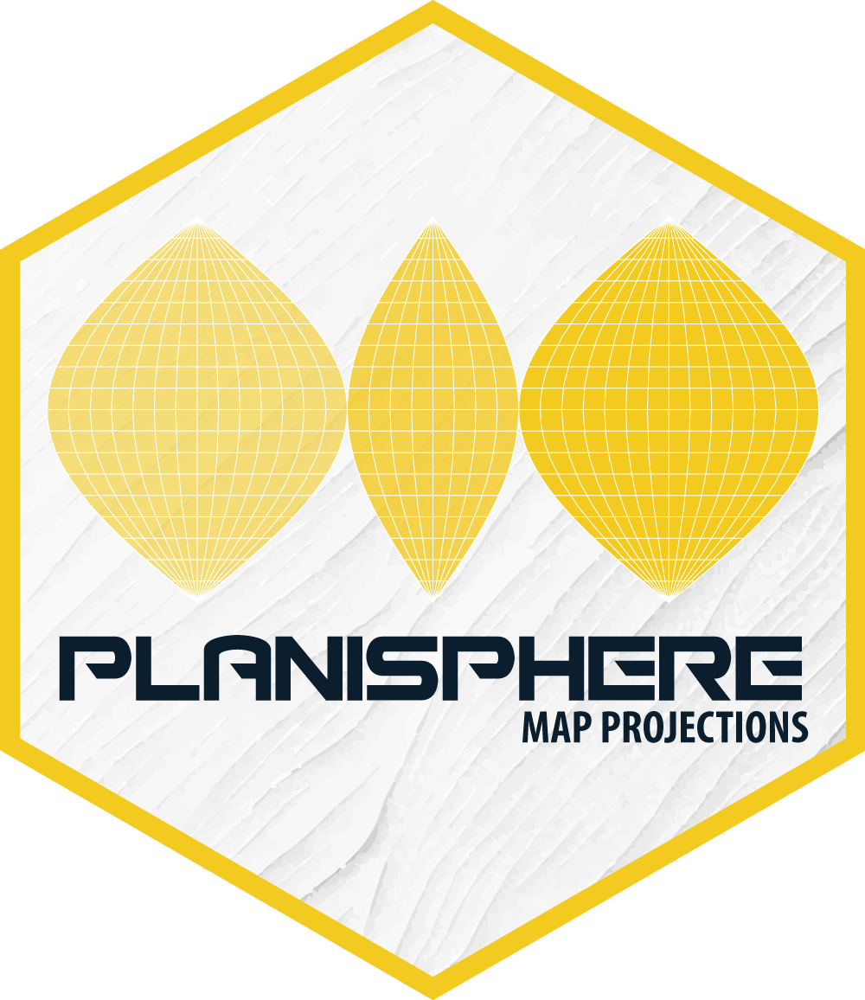
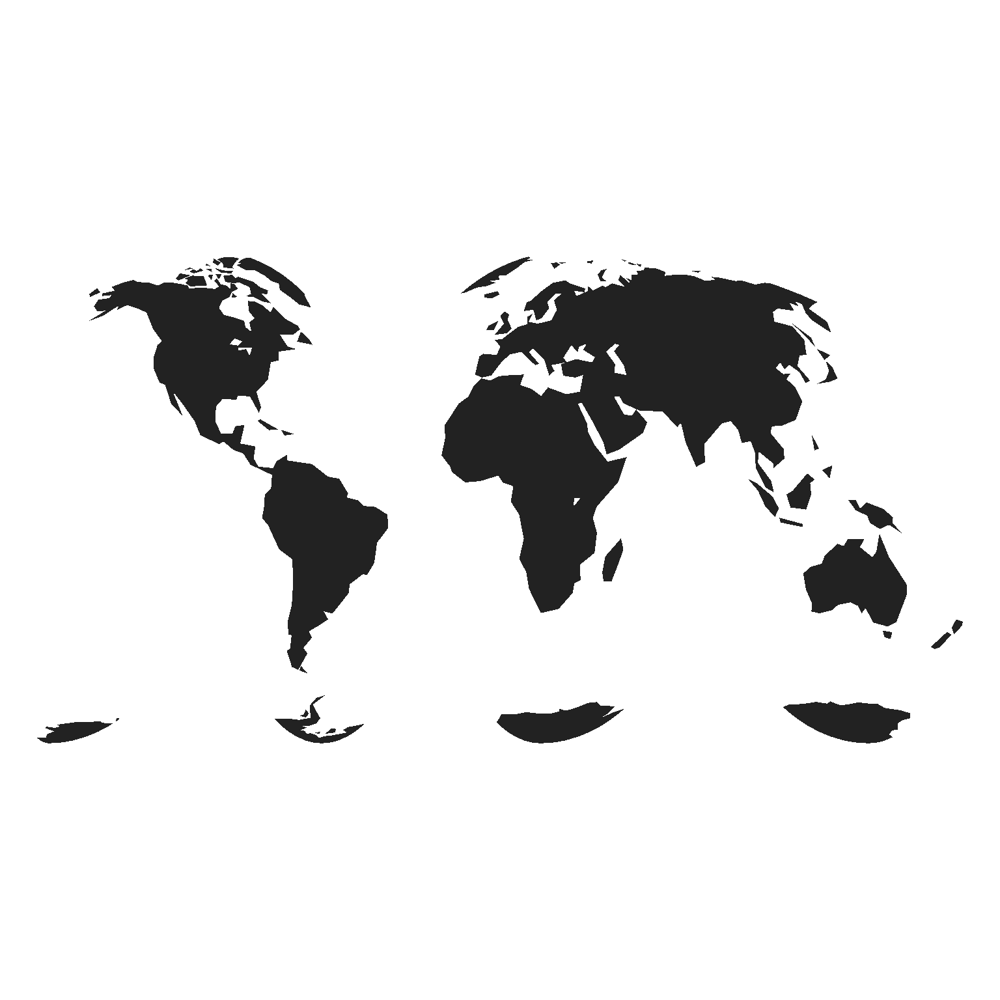
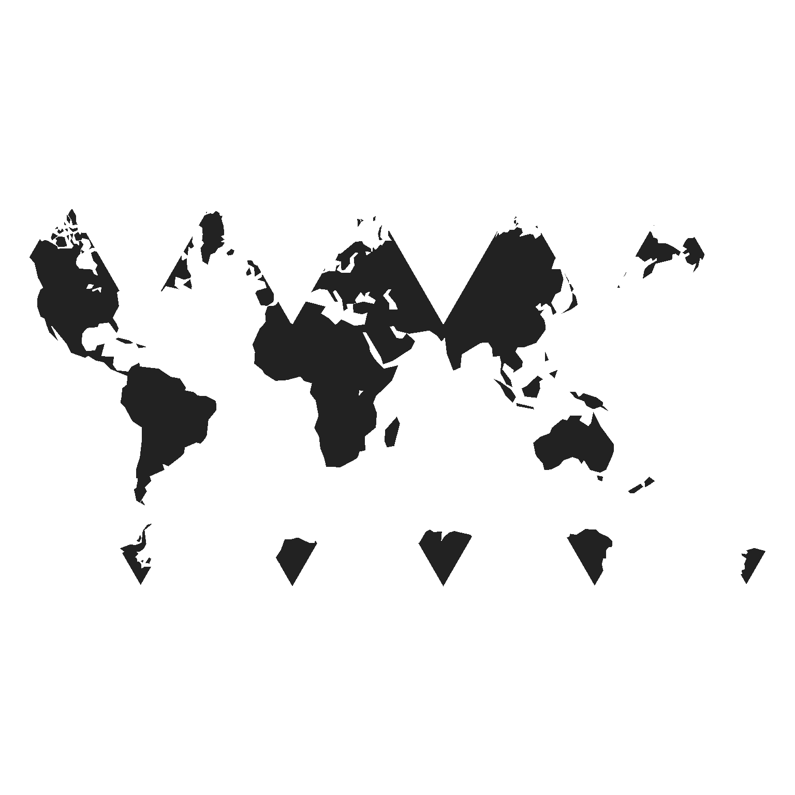
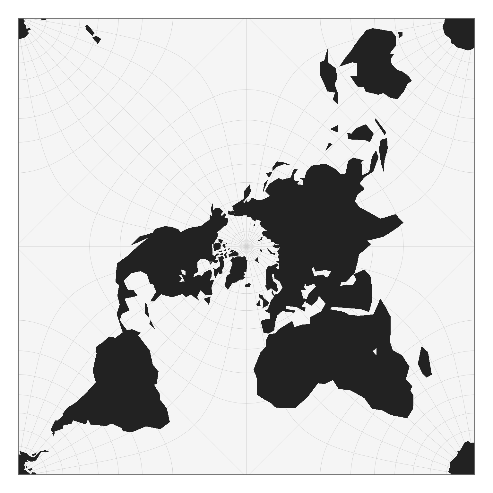
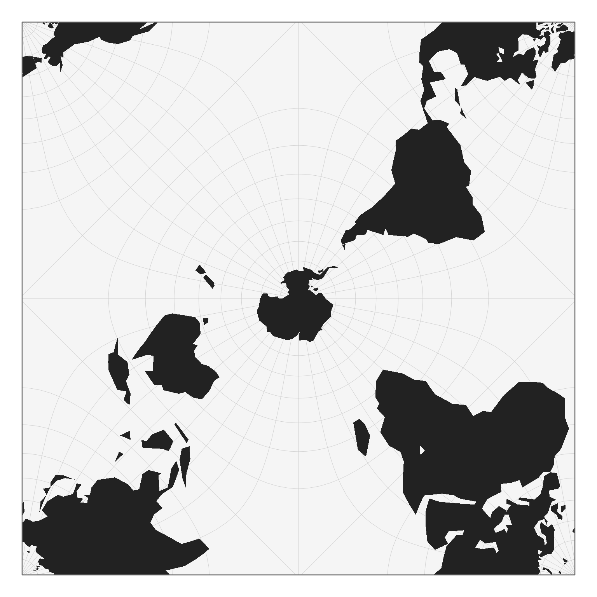
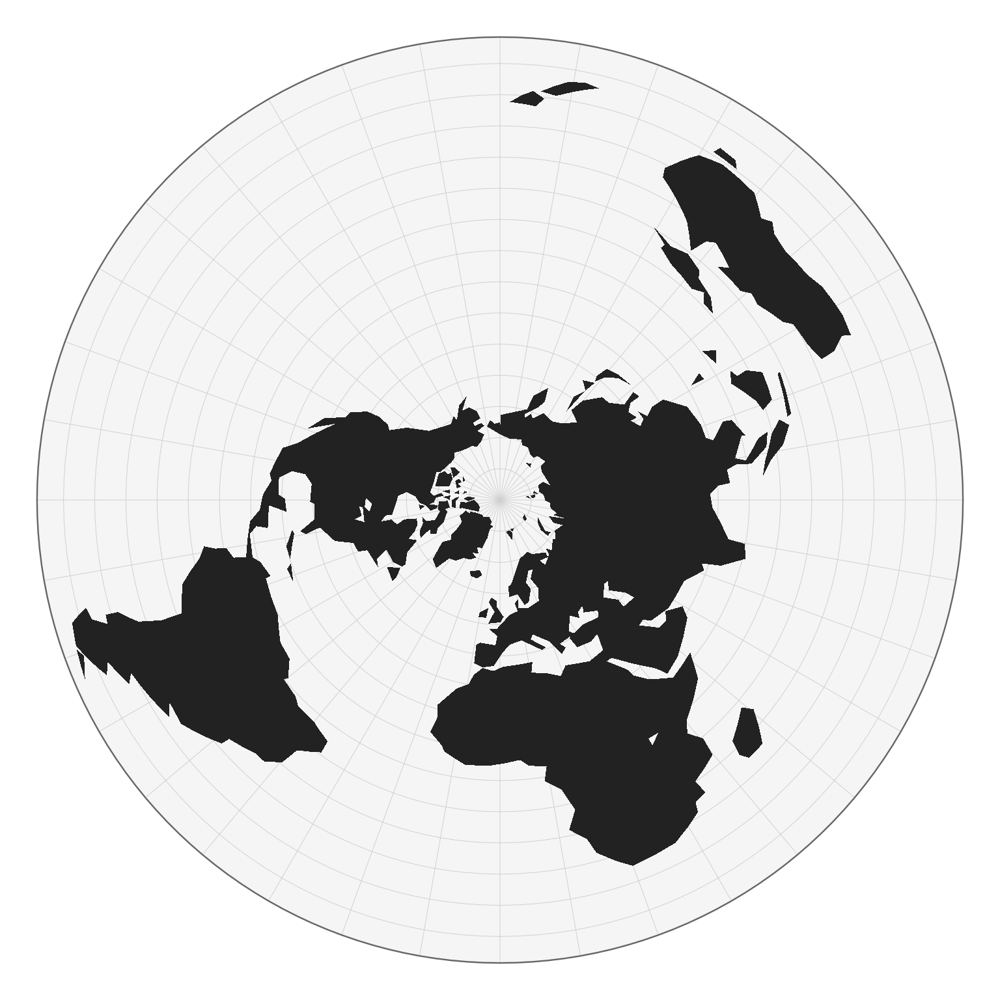
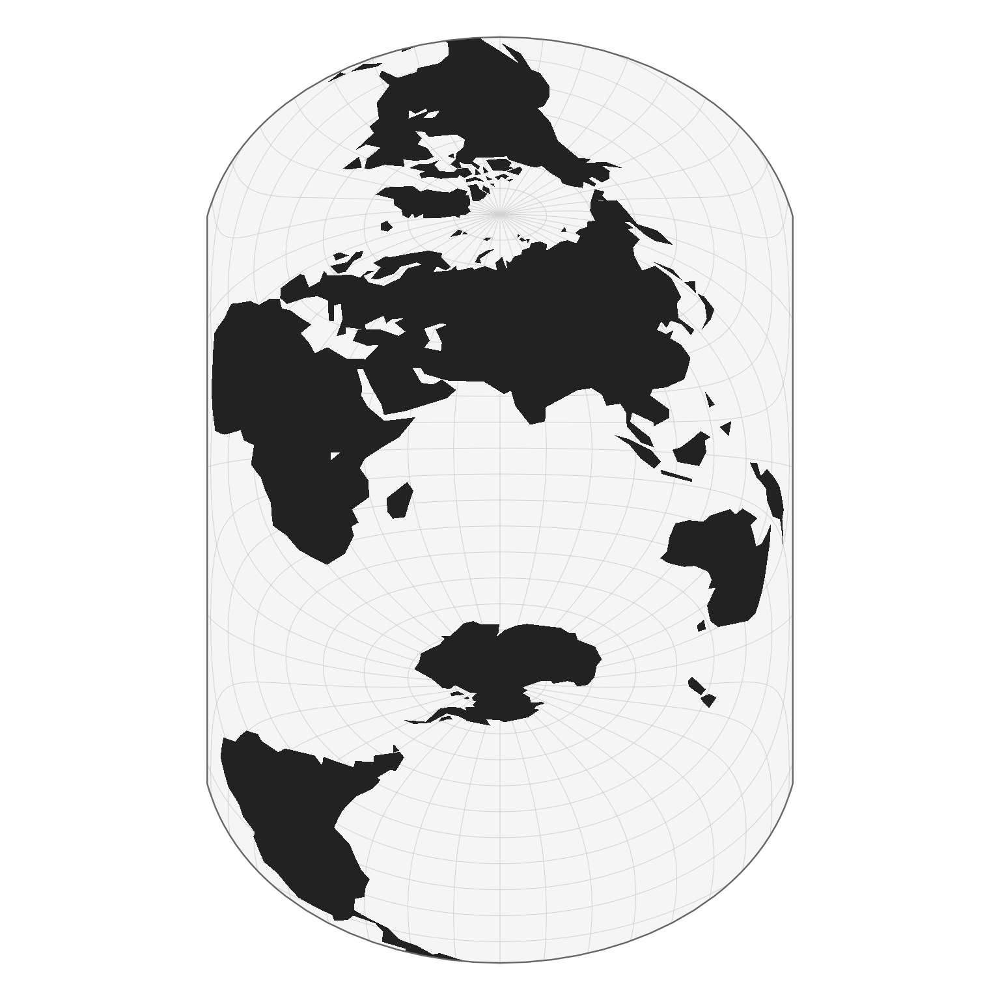

Hello planisphere
Nicolas Lambert
2026-06-04
Source:vignettes/hello_planisphere.Rmd
hello_planisphere.RmdPlanisphere is an R package that
transforms geographic spatial data frames (latitude–longitude
coordinates) into projected spatial data frames using a variety of map
projections.

1 - Preliminary remarks
What are map projections?
The Earth is a sphere (more precisely, a geoid), a three-dimensional object floating in space. Yet the maps we use every day are flat: they exist in two dimensions, on paper or on a screen. To move from this curved reality to a flat representation, we need to transform coordinates expressed on the globe in latitude and longitude into Cartesian coordinates on a plane. This is not a simple flattening operation: it relies on a mathematical transformation known as a map projection, which converts the curved surface of the Earth into a flat map. Projections are generally classified according to the geometric surface used as an intermediate step : cylindrical, conic, or azimuthal, each offering a different way of “wrapping” the globe before unfolding it.
However, this transformation inevitably introduces distortions. In a way, it is similar to trying to press the peel of an orange onto a flat table. No matter how carefully you proceed, the surface cannot lie flat without consequences: it will stretch in some places, compress in others, and may even tear or fold if forced. The same fundamental constraint applies to the Earth’s surface when projected onto a plane. No projection can preserve all geometric properties at once, meaning that distances, areas, shapes, or directions are always altered to some degree, depending on the chosen projection and its purpose.
Geodesic vs Spherical model
The Earth is not a perfect sphere; in geodesy it is more accurately approximated by an ellipsoid. This refinement accounts for the slight flattening at the poles and provides the mathematical foundation for high-precision geospatial computations. However, in the planisphere package, we adopt a spherical model of the Earth for simplicity and consistency with its visual and geometric goals. If you need to work directly with ellipsoidal models and geodesic accuracy, other tools such as GDAL or PROJ are more appropriate, as they operate on ellipsoidal Earth representations.
D3.js librariries
Under the hood, the package relies on a set of JavaScript libraries from the D3 ecosystem. First, d3-geo provides the fundamental building blocks for spherical geometry, including coordinate transforms and a set of standard map projections. d3-geo-projection extends this system with a wider collection of projection methods, including discontinuous projections. Finally, d3-geo-polygon focuses on spherical polygon operations: it introduces additional projections that rely on polygon clipping.
2 - How it works?
# install.packages("remotes")
# remotes::install_github("riatelab/planisphere")## V8 engine 12.4.254.21 initialized## Loading D3.js geospatial stack## ✔ d3 (7.9.0)## ✔ d3-geo-polygon (2.0.1)## ✔ d3-geo-projection (4.0.0)## ✔ d3-geo (3.1.1)## ✔ additional script (spilhaus.js)## Planisphere is ready 🌐## Linking to GEOS 3.12.1, GDAL 3.8.4, PROJ 9.4.0; sf_use_s2() is TRUE
world <- st_read(
system.file("gpkg/land.gpkg", package = "planisphere"),
quiet = TRUE
)
result <- planisphere::project(x = world, proj = "geoInterruptedMollweide")
planisphere::display(result)

Custom projections
Peirce projection
peirceN <- planisphere::project(
x = world,
proj = "PeirceQuincuncial",
rotate = c(-25, -90),
additional_layers = TRUE
)
display(peirceN)
peirceS <- planisphere::project(
x = world,
proj = "PeirceQuincuncial",
rotate = c(-25, 90, 180),
additional_layers = TRUE
)
display(peirceS)
Peters (upside down)
peters <- planisphere::project(
x = world,
proj = "geoCylindricalEqualArea",
parallel = 45,
rotate = c(167, 180),
additional_layers = TRUE
)
display(peters)
polar <- planisphere::project(
x = world,
proj = "geoAzimuthalEquidistant",
clipAngle = 150,
rotate = c(0, -90),
additional_layers = TRUE
)
display(polar)
projection: d3.geoCylindricalEqualArea().parallel(45).rotate([167, 180]),
Hao
hao <- planisphere::project(
x = world,
proj = "geoHufnagel",
a = 0.8,
b = 0.35,
psiMax = 50,
ratio = 1.6,
angle = 90,
rotate = c(110, -200, 90),
additional_layers = TRUE
)
display(hao)